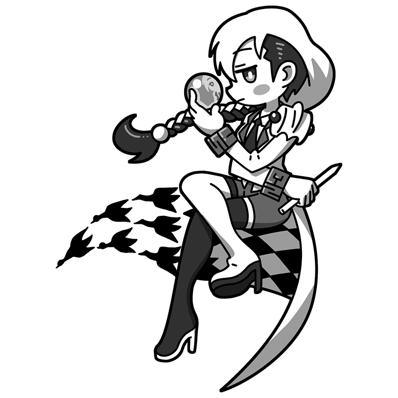

An endless world unfolds without end.
Are you prepared
to wander through infinity?
Escher
A geometric magician captivated
by an endless world
A solitary muse who pursued her own unique style in 19th-century Netherlands. She has a mysterious aura and is obsessed with concepts like infinity and paradoxes. She has never been good with people, and few can understand what goes on in her mind.
Style
Hometown
Netherlands
Classics
- "Waterfall"
- "Day and Night"
- "Print Gallery" etc.
This is the Escher piece!
Waterfall
Water flows through a channel between two towers. Yet it somehow flows uphill, while the building itself becomes impossible halfway through. “Infinity” was a lifelong theme for Escher, who created many endless staircases and patterns that seem to stretch to the ends of the earth. The strange plants surrounding the impossible building are also worth a look.
Year
1961
Medium
Lithograph on paper
Dimension
38 cm x 30 cm
Collection
Escher Museum
（Netherlands)
Who is Escher?
Maurits Escher
An unconventional Dutch printmaker. He began by creating landscapes, but gradually turned to illusion-based works featuring endless staircases, inverted buildings, and other impossible scenes. A visit to Spain’s Alhambra Palace inspired him to incorporate its geometric patterns into his later works. He left around 400 works, all of them prints.
Full Name
Maurits Cornelis Escher
Born
June 17, 1898
Died
March 27, 1972(aged 73)